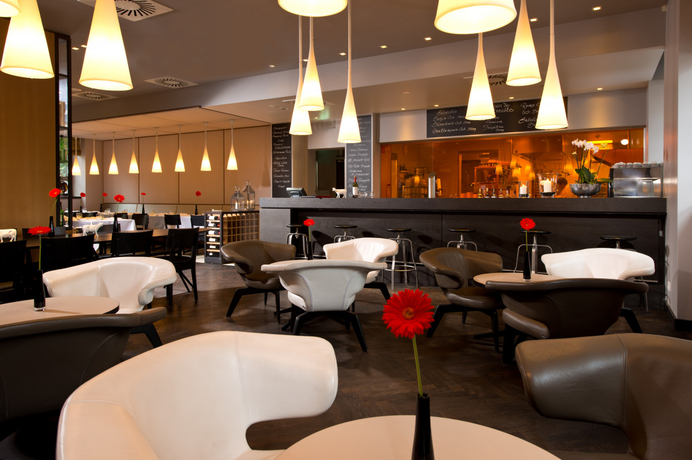

ABOUT US
We are a restaurant located in Kerikeri, in the beautiful Bay of Islands.
Our speciality is Maori kai and we offer a unique Te Ao Maori experience for locals and tourists alike.
We are locally owned and operated, and we welcome you to drop in and join the locals in our fun and friendly atmosphere.
Our goal is to offer fantastic locally made food at a reasonable price while maintaining great quality and service.
Join us in our warm and inviting setting for a leisurely dining experience.